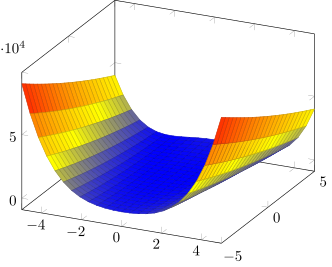

%load_ext itikzGradient vector
Definition. Let \(f:\mathbf{R}^n \to \mathbf{R}\) be a scalar-valued function. The gradient vector of \(f\) is defined as:
\[\begin{align*} \nabla f(\mathbf{x}) = \left[\frac{\partial f}{\partial x_1},\frac{\partial f}{\partial x_2},\ldots,\frac{\partial f}{\partial x_n}\right] \end{align*}\]
The graph of the function \(f:\mathbf{R}^n \to \mathbf{R}\) is the hypersurface in \(\mathbf{R}^{n+1}\) given by the equation \(x_{n+1}=f(x_1,\ldots,x_n)\).
Definition. \(f\) is said to be differentiable at \(\mathbf{a}\) if all the partial derivatives \(f_{x_i}(\mathbf{a})\) exist and if the function \(h(\mathbf{x})\) defined by:
\[\begin{align*} h(\mathbf{x}) = f(\mathbf{a}) + \nabla f(\mathbf{a})\cdot (\mathbf{x}-\mathbf{a}) \end{align*}\]
is a good linear approximation to \(f\) near \(a\), meaning that:
\[\begin{align*} L = \lim_{\mathbf{x} \to \mathbf{a}} \frac{f(\mathbf{x}) - h(\mathbf{x})}{||\mathbf{x} - \mathbf{a}||} = 0 \end{align*}\]
If \(f\) is differentiable at \(\mathbf{a},f(\mathbf{a})\), then the hypersurface determined by the graph has a tangent hyperplane at \((\mathbf{a},f(\mathbf{a}))\) given by the equation:
\[\begin{align*} h(\mathbf{x}) = f(\mathbf{a}) + \nabla f(\mathbf{a})\cdot (\mathbf{x}-\mathbf{a}) \end{align*}\]
The directional derivative
Let \(f(x,y)\) be a scalar-valued function of two variables. We understand the partial derivative \(\frac{\partial f}{\partial x}(a,b)\) as the slope at the point \((a,b,f(a,b))\) of the curve obtained as the intersection of the surface \(z=f(x,y)\) and the plane \(y=b\). The other partial derivative has a geometric interpretation. However, the surface \(z=f(x,y)\) contains infinitely many curves passing through \((a,b,f(a,b))\) whose slope we might choose to measure. The directional derivative enables us to do this.
Intuitively, \(\frac{\partial f}{\partial x}(a,b)\) is as the rate of change of \(f\) as we move infinitesimally from \(\mathbf{a}=(a,b)\) in the \(\mathbf{i}\) direction.
Mathematically, by the definition of the derivative of \(f\):
\[\begin{align*} \frac{\partial f}{\partial x}(a,b) &= \lim_{h \to 0} \frac{f(a+h,b) - f(a,b)}{h}\\ &=\lim_{h \to 0} \frac{f((a,b) + (h,0)) - f(a,b)}{h}\\ &=\lim_{h \to 0} \frac{f((a,b) + h(1,0)) - f(a,b)}{h}\\ &=\lim_{h \to 0} \frac{f(\mathbf{a} + h\mathbf{i}) - f(\mathbf{a})}{h} \end{align*}\]
Similarly, we have:
\[\begin{align*} \frac{\partial f}{\partial y}(a,b) = \lim_{h\to 0} \frac{f(\mathbf{a} + h\mathbf{j})-f(\mathbf{a})}{h} \end{align*}\]
Writing partial derivatives as we have enables us to see that they are special cases of a more general type of derivative. Suppose \(\mathbf{v}\) is a unit vector in \(\mathbf{R}^2\). The quantity:
\[\begin{align*} \lim_{h \to 0} \frac{f(\mathbf{a} + h\mathbf{v}) - f(\mathbf{a})}{h} \end{align*}\]
is nothing more than the rate of change of \(f\) as we move infinitesimally from \(\mathbf{a} = (a,b)\) in the direction specified by \(\mathbf{v}=(A,B) = A\mathbf{i} + B\mathbf{j}\).
Definition. Let \(\mathbf{v}\in \mathbf{R}^n\) be any unit vector, then the directional derivative of \(f\) at \(\mathbf{a}\) in the direction of \(\mathbf{v}\), denoted \(D_{\mathbf{v}}f(\mathbf{a})\) is:
\[\begin{align*} D_{\mathbf{v}}f(\mathbf{a}) = \lim_{h \to 0} \frac{f(\mathbf{a} + h\mathbf{v}) - f(\mathbf{a})}{h} \end{align*}\]
Let’s define a new function \(F\) of a single variable \(t\), by holding everything else constant:
\[\begin{align*} F(t) = f(\mathbf{a} + t\mathbf{v}) \end{align*}\]
Then, by the definition of directional derivatives, we have:
\[\begin{align*} D_{\mathbf{v}}f(\mathbf{a}) &= \lim_{t\to 0} \frac{f(\mathbf{a} + t\mathbf{v}) - f(\mathbf{a})}{t}\\ &= \lim_{t\to 0} \frac{F(t) - F(0)}{t - 0} \\ &= F'(0) \end{align*}\]
That is:
\[\begin{align*} D_{\mathbf{v}}f(\mathbf{a}) = \frac{d}{dt} f(\mathbf{a} + t\mathbf{v})\vert_{t=0} \end{align*}\]
Let \(\mathbf{x}(t) = \mathbf{a}+t\mathbf{v}\). Then, by the chain rule:
\[\begin{align*} \frac{d}{dt} f(\mathbf{a} + t\mathbf{v}) &= Df(\mathbf{x}) D\mathbf{x}(t) \\ &= \nabla f(\mathbf{x}) \cdot \mathbf{v} \end{align*}\]
This equation emphasizes the geometry of the situation. The directional derivative is just the dot product of the gradient vector and the direction vector \(\mathbf{v}\).
Theorem. Let \(f:X\to\mathbf{R}\) be differentiable at \(\mathbf{a}\in X\). Then, the directional derivative \(D_{\mathbf{v}}f(\mathbf{a})\) exists for all directions \(\mathbf{v}\in\mathbf{R}^n\) and moreover we have:
\[\begin{align*} D_{\mathbf{v}}f(\mathbf{a}) = \nabla f(\mathbf{x})\cdot \mathbf{v} \end{align*}\]
Gradients and steepest ascent
Suppose you are traveling in space near the planet Nilrebo and that one of your spaceship’s instruments measures the external atmospheric pressure on your ship as a function \(f(x,y,z)\) of position. Assume quite reasonably that this function is differentiable. Then, the directional derivative exists and if you travel from point \(\mathbf{a}=(a,b,c)\) in the direction of the unit vector \(\mathbf{u}=u\mathbf{i}+v\mathbf{j}+w\mathbf{k}\), the rate of change of pressure is given by:
\[\begin{align*} D_{\mathbf{u}}f(\mathbf{a}) = \nabla f(\mathbf{a}) \cdot \mathbf{u} = ||\nabla f(\mathbf{a})|| \cdot ||\mathbf{u}|| \cos \theta \end{align*}\]
where \(\theta\) is the angle between \(\mathbf{u}\) and the gradient vector \(\nabla f(\mathbf{a})\). Because, \(-1 \leq \cos \theta \leq 1\), and \(||\mathbf{u}||=1\), we have:
\[\begin{align*} - ||\nabla f(\mathbf{a})|| \leq D_{\mathbf{u}}f(\mathbf{a}) \leq ||\nabla f(\mathbf{a})|| \end{align*}\]
Moreover, \(\cos \theta = 1\) when \(\theta = 0\) and \(\cos \theta = -1\) when \(\theta = \pi\).
Theorem. The directional derivative \(D_{\mathbf{u}}f(\mathbf{a})\) is maximized, with respect to the direction, when \(\mathbf{u}\) points in the direction of the gradient vector \(f(\mathbf{a})\) and is minimized when \(\mathbf{u}\) points in the opposite direction. Furthermore, the maximum and minimum values of \(D_{\mathbf{u}}f(\mathbf{a})\) are \(||\nabla f(\mathbf{a})||\) and \(-||\nabla f(\mathbf{a})||\).
Theorem Let \(f:X \subseteq \mathbf{R}^n \to \mathbf{R}\) be a function of class \(C^1\). If \(\mathbf{x}_0\) is a point on the level set \(S=\{\mathbf{x} \in X | f(\mathbf{x}) = c\}\), the gradient vector \(f(\mathbf{x}_0) \in \mathbf{R}^n\) is perpendicular to \(S\).
Proof. We need to establish the following: if \(\mathbf{v}\) is any vector tangent to \(S\) at \(\mathbf{x}_0\), then \(\nabla f(\mathbf{x}_0)\) is perpendicular to \(\mathbf{v}\) (i.e. \(\nabla f(\mathbf{x}_0) \cdot \mathbf{v} = 0\)). By a tangent vector to \(S\) at \(\mathbf{x}_0\), we mean that \(\mathbf{v}\) is the velocity vector of a curve \(C\) that lies in \(S\) and passes through \(\mathbf{x}_0\).
Let \(C\) be given parametrically by \(\mathbf{x}(t)=(x_1(t),\ldots,x_n(t))\) where \(a < t < b\) and \(\mathbf{x}(t_0) = \mathbf{x}_0\) for some number \(t_0\) in \((a,b)\).
\[\begin{align*} \frac{d}{dt}[f(\mathbf{x}(t))] &= Df(\mathbf{x}) \cdot \mathbf{x}'(t)\\ &= \nabla f(\mathbf{x}) \cdot \mathbf{v} \end{align*}\]
Evaluation at \(t = t_0\), yields:
\[\begin{align*} \nabla f (\mathbf{x}'(t_0)) \cdot \mathbf{x}'(t_0) = \nabla f(\mathbf{x}_0) \cdot \mathbf{v} \end{align*}\]
On the other hand, since \(C\) is contained in \(S\), \(f(\mathbf{x})=c\). So,
\[\begin{align*} \frac{d}{dt}[f(\mathbf{x}(t))] &= \frac{d}{dt}[c] = 0 \end{align*}\]
Putting the above two facts together, we have the desired result.
Gradient Descent - Naive Implementation
Beginning at \(\mathbf{x}_0\), optimization algorithms generate a sequence of iterates ${k}{k=0}^{} that terminate when no more progress can be made or it seems a solution point has been approximated with sufficient accuracy. $The gradient descent method is an optimization algorithm that moves along \(\mathbf{d}_k = -\nabla f(\mathbf{x}_k)\) at every step. Thus,
\[\begin{align*} \mathbf{x}_{k+1} = \mathbf{x}_k - \alpha_k \mathbf{d}_k \end{align*}\]
It can choose the step length \(\alpha_k\) in a variety of ways. One advantage of steepest descent is that it requires the calculation of the gradient \(\nabla f(\mathbf{x}_k)\), but not of the second derivatives. However, it can be excruciatingly slow on difficult problems.
from typing import Callable
import numpy as np
def gradient_descent(
func:Callable[[float], float],
alpha:float,
lower_bnd:np.array,
upper_bnd:np.array,
epsilon:float=1e-6,
n_iter:int=200
):
"""
The gradient descent algorithm.
"""
# Generate an initial point
x_0 = lower_bnd + np.random.rand()*(upper_bnd - lower_bnd)
x = np.array()
f_x = np.array()
x_curr = x_0
for i in range(n_iter):
# Calculate the forward difference
h = 0.001
f_x_curr = f(x_curr)
grad = (f(x_curr + h) - f_x_curr)/h
# Compute the next iterate
x_next = x_curr - alpha * grad
x = np.concatenate((x,x_curr))
f_x = np.concatenate((f_x,f_x_curr))
x_curr = x_next
print(f"Iter={i}, x{[i]}={x_curr}, f({x_curr})={f_x_curr}")
return x, f_xOne infamous test function is the Rosenbrock function defined as:
\[\begin{align*} f(x,y) = (a-x)^2 + b(y-x^2)^2 \end{align*}\]
Here is the plot of the Rosenbrock function with parameters \(a=1,b=100\).
Show the code
%%itikz --temp-dir --tex-packages=tikz,pgfplots --tikz-libraries=arrows --implicit-standalone
\begin{tikzpicture}[scale=1.5]
\begin{axis}
\addplot3 [surf] {(1-x)^2 + 100*(y-x^2)^2};
\end{axis}
\end{tikzpicture}
Show the code
%%itikz --temp-dir --tex-packages=tikz,pgfplots --tikz-libraries=arrows --implicit-standalone
\begin{tikzpicture}[scale=1.5]
\begin{axis}
\addplot3 [
contour
] {(1-x)^2 + 100*(y-x^2)^2};
\end{axis}
\end{tikzpicture} on input line 4.
! Package pgfkeys Error: I do not know the key '/tikz/contour' and I am going t
o ignore it. Perhaps you misspelled it.
See the pgfkeys package documentation for explanation.
Type H <return> for immediate help.
...
l.9 ] {(1-x)^2 + 100*(y-x^2)^2};
?
! Emergency stop.
...
l.9 ] {(1-x)^2 + 100*(y-x^2)^2};
! ==> Fatal error occurred, no output PDF file produced!
Transcript written on 75830abe1d82f7394784178633ba4163.log.